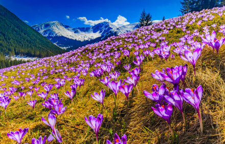
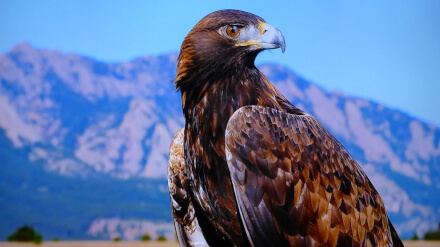
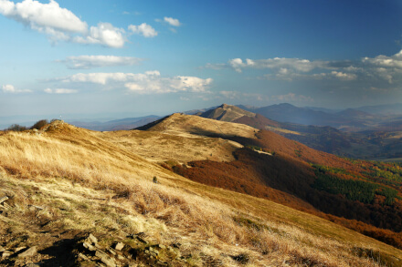
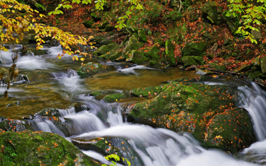
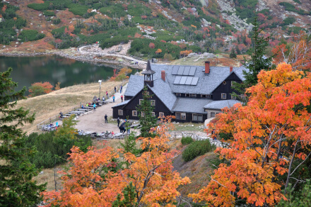
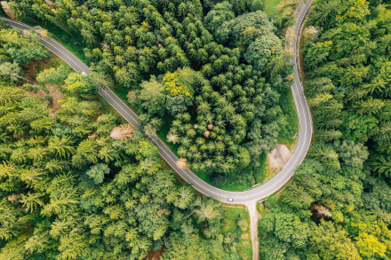
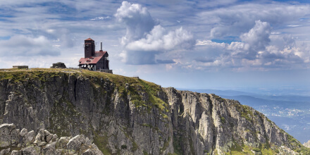

The Tatra Mountains
Probably the most famous between tourists are a mountain range that form a natural border between Slovakia and Poland. They are the highest mountain range in Poland. The Tatra Mountains occupy an area of 785 square kilometres (303 sq mi). The highest point in Poland, Rysy, at 2,499 m (8200 ft) is located south of Zakopane. The Tatras are protected by law by the establishment of the Tatra National Park, Slovakia and the Tatra National Park, Poland, which are jointly entered in UNESCO’s World Network of Biosphere Reserves. There are around 650 caves in the park, of which the Wielka Sniezna cave system is the longest (18 kilometres (11 mi)), and the deepest (maximum depth 814 metres (2,671 ft)). Six caves of this system are open to public. The park has over 30 mountain lakes, called staw (Polish: pond). These water bodies are an important part of the High Tatra landscape. The largest lakes are: Morskie Oko with an area of 349,000 m² and maximum depth of 50.8 metres (167 ft)); and Wielki Staw with an area of 344,000 m² and maximum depth of 79.3 metres (260 ft).
lovePoland.org
Source


The Bieszczady Mountains
Bieszczady is a mountain range that runs from the extreme south-east of Poland through Ukraine and Slovakia. Frequently Bieszczady refers only to the Western Bieszczady or even only to the part of the range lying within Poland. Most of the Polish range is covered by a Bieszczady National Park. Currently Park occupies an area of 292.02 square kilometres (112.75 sq mi), covering the highest areas of the Polish part of the Bieszczady Mountains. In 1992 the Park and its surrounding areas became part of the UNESCO East Carpathian Biosphere Reserve. Forest cover about 80% of the area of the National Park. The woods are mainly natural and in some cases it can be said that they have preserved their pristine character. The highest peak in the park, Tarnica, is 1,346 metres (4,416 ft) above sea level. Animal life is abundant with several species of endangered animals thriving in the area, among them bears, wolves, wildcats, wild boars, beavers, otters and lynxes as well as deer, moose and European bisons (of which around 100 live in the area). The Park also contains interesting bird species, including eagles and owls, and is home to the largest Polish population of Aesculapian snakes.
lovePoland.org
Source



The Karkonosze National Park
The National Park in the Karkonosze – Mountains in southwestern Poland, along the border with the Czech Republic. The park is located in Lower Silesian Voivodeship, in the highest part of the Sudetes. It was created in 1959 to cover an area of 55.10 km². Today it is slightly larger at 55.76 km2 (21.53 sq mi), of which 17.18 km² is strictly protected. The majority of the park area, around 33.80 km², consists of forests. In 1992 Karkonosze National Park, together with the neighbouring Czech National Park, became part of the Krkonose / Karkonosze biosphere reserve under UNESCO’s Man and the Biosphere (MaB) programme. Its highest peak is Śnieżka at 1,602 metres (5,256 ft) above sea level, forming a triangle with (similarly sounding) Śnieżnik, 1,424 metres (4,672 ft), as well as Ślęża peak, further apart. They are connected by a red hiking trail only for qualified tourists.Śnieżka is unique in its rounded, treeless cap, which stands in sharp contrast to other, lower peaks. There are about 100 various birds living in the park, the most numerous of animal species living there. In the higher parts of the mountains there are fewer species of them; in the lower levels there are 100 varieties, but in the peaks there are not more than 10. The park has four species of fish, six species of amphibians, and five species of reptiles. The park’s attraction are mouflons, brought here at the beginning of the 20th century.
lovePoland.org
Source


